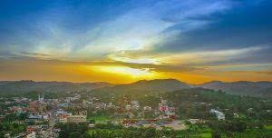
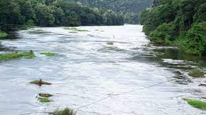

Pathanamthitta is the head quarters of Pathanamthitta district . The district was formed on Ist November 1982. It was carved out of Idukki, Alappuzha and Kollam districts.The district is close to the western Ghats and is endowed with scenic landscape comprising of low undulating hills, extensive stretches of lush forests, rivers and charming countryside. It is also known for exuberant fairs and festivals. Pathanamthitta district is known as the ‘Headquarters of Pilgrimage Tourism’, of the State. Pathanamthitta has an important place in erstwhile Travancore state the biggest taluk in the old Travancore state was Pathanamthitta and the revenue collection from this taluk played a prominent role in filling the coffers of the state.The district headquarters is noted for communal and cultural harmony. There are numerous churches, temples and mosques built in close proximity. Situated near the Western Ghats and bordered by the hills, Pathanamthitta district is a treat to eyes with its vast unending stretches of forests, rivers and rural landscapes. Blessed by nature, the district is famous for its scenic beauty, fairs and festivals.

Famous Tourist Spots
Gavi
Gavi is an Eco-Tourism a project of the Kerala Forest Development Corporation located in Pathanamthitta district, Kerala. Gavi, located in Pathanamthitta district offers its visitors activities like trekking, wildlife watching, outdoor camping in specially built tents, and night safaris. Distance from Pathanamthitta To Gavi is 109 km 428 mtrs & Travel Time is 2 hour 5 mins By Road. Gavi is 14 km south west of Vandiperiyar, 28 km from Kumily, near Thekkady. Gavi is inside the Ranni reserve forest. Gavi is a part of Seethathode Panchayath in Ranni Taluk. Gavi is part of the Periyar Tiger Reserve, and the route can be covered by car from Vandiperiyar. The entrance fee is 25 rupees per person and 50 rupees per vehicle. Cameras are 25 rupees and video cameras are charged 100 rupees. Both day and night stays are available. Forest tent camping is available from November through March.[citation needed]. It has been said that most enjoyable route to Gavi is the way from Pathanamthitta. The rough journey to Gavi may better be made on a sturdy vehicle like a jeep. Entry passes must be obtained from the Forest Check Post en route at Vallakkadavu. Advance booking with the Kerala Forest Development Corporation Ltd. is highly appreciable wherein such formalities will be taken care of by the company itself.
Sabarimala
The Lord Ayyappa Temple of Sabarimala, located in a forest in Pathanamthitta, is a hill shrine. The temple is situated on a hilltop at an altitude of 468 m (1535 ft) above sea level and is surrounded by mountains and dense forests. Vehicles going to Sabarimala are allowed only up to Pamba which is at a 5 kilometer distance from the temple. From here, visitors have to proceed by foot. The temple is open during the pilgrim season known as mandala kaalam which falls approximately between 14th November to 27th December every year, and makaravilakku which falls in mid January each year. During this time it is estimated that about 45-50 million devotees visit the shrine of Ayyappa. The temple is also open for a few additional days every month.
There are strict traditional practices, rituals, preparations and dress codes meant for those intending to visit Sabarimala. In preparation for their visit, pilgrims wear black rudraksha beads around their neck, dress in black or blue mundus/dhotis and abstain from the consumption of non-vegetarian food and alcohol. They also take a vow to celibacy for the 40 days prior to their pilgrimage.
Thriveni Sangamam

Situated on the way to Sabarimala, the Thriveni Sanganam as the name suggests is the point where the Holy Pamba River meets with the Manimala River in its north and with the Achankovil River in the south. The devotees stop here to take a dip in the holy water to wash away their sins. Millions of visitors also come here to enjoy the beautiful landscape of the place. The Pamba River, also known as the Dakshina Ganga or the Ganges of South India, is the third longest river in the southern part of the country which begins flowing from the Western Ghats. Devotees believe that it was near this holy river that King Rajasekara gained a vision of Lord Ayappa.
Considered as pure as the Ganges, the water of the Pamba River can purify the evil and lift the curse which is why it is deemed to be lucky for all the pilgrims to take a dip in the river before and after trekking the Sabarimala. Triveni Sanganam is a beautiful place which is visited by thousands of devotees every year not only to sanctify themselves in the holy water but also to enjoy the scenic beauty of the place with the natural surroundings.